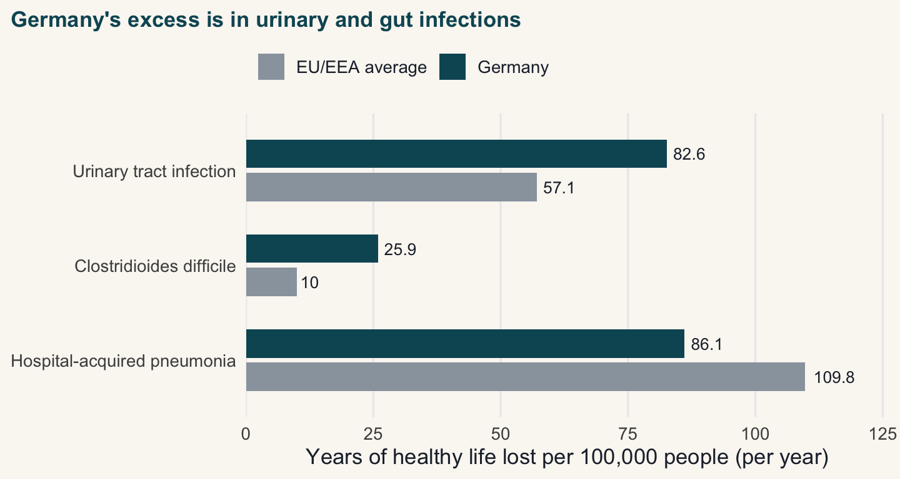

Germany’s hospitals infect fewer patients than the European average, yet the country loses more healthy life to those infections: 308 years per 100,000 people, against 290 across Europe (based on 2011 and 2012 surveys).
The problem
A hospital that reports a low infection rate sounds like a safe one. But the number most hospitals report is simply how many of their patients get infected, and that number can hide a bigger problem.
A study of German hospitals found exactly this. Germany’s patients are less likely to catch an infection than the European average. Yet across the whole country, Germany loses more healthy life to hospital infections than the EU does. This post asks two simple questions:
- Does a lower infection rate per patient mean less harm to the population?
- Are the most common infections the ones that do the most harm?
NoteWhy this matters
Infections caught in hospital are one of the biggest avoidable harms in health care, and the study estimates that 20 to 30% of them could be prevented (Zacher et al. 2019). If we watch the wrong number, the real harm can grow while the number we are watching still looks fine.
The evidence
To answer both questions, we need a fair way to compare very different infections. A mild but common one has to be weighed against a rare but deadly one. The study (Zacher et al. 2019) does this with a measure called the DALY, or disability-adjusted life year. One DALY is one year of healthy life lost, either to an early death or to time spent ill. It lets us add up the harm from different infections on a single scale.
The figures come from two hospital surveys run in 2011 and 2012. One covered 9,626 patients in 46 German hospitals; the other covered 273,753 patients in 1,149 hospitals across Europe. A survey like this only shows who is infected on a single day, so the authors used an open-source R method to estimate how many infections happen over a whole year. They then turned those into DALYs using models from Cassini et al. (2016).
Safer per patient, yet more harm overall
In a single year, Germany has an estimated 478,222 hospital infections. These lead to 16,245 deaths and 248,920 years of healthy life lost. Per 100,000 people, that works out to 308.2 DALYs in Germany, against 290.0 for the EU average.
The authors put this down to volume, not hygiene. Germany has more hospital beds than any other country in Europe, and it treats a very large share of its population. A smaller risk for each patient, spread across far more patients, still adds up to more harm overall. In other words, the gap is about scale, not standards.
So the answer to the first question is no. The rate per patient can fall while the harm to the whole population rises.
The gap is not spread evenly, though. Figure 1 shows where Germany runs ahead of the European average: urinary tract infections and Clostridioides difficile, a gut infection. For pneumonia, Germany is actually better than the EU.
Common isn’t the same as harmful
Counting cases can mislead too. Table 1 ranks the five infections by the harm they cause. Urinary tract infections are by far the most common, but they are usually mild. Fewer than 2 in 100 people who get one will die from it. Bloodstream infections are about eight times rarer, but they kill roughly 14 in 100, so they end up causing almost as much harm.
So the answer to the second question is also no. The longest list of cases is not the longest list of harm.
| Infection | Cases (per year) | Deaths (per year) | Healthy years lost (DALYs per year) | Deaths per 100 cases |
|---|---|---|---|---|
| Hospital-acquired pneumonia | 106,586 | 3,968 | 69,508 | 3.7 |
| Urinary tract infection | 214,150 | 3,664 | 66,701 | 1.7 |
| Bloodstream infection | 26,976 | 3,905 | 58,350 | 14.5 |
| Surgical site infection | 93,222 | 2,328 | 28,842 | 2.5 |
| Clostridioides difficile | 36,002 | 1,917 | 20,890 | 5.3 |
Figure 2 shows this in one picture. For each infection, its share of all cases sits next to its share of all the harm. Where the two bars are far apart, counting cases alone gives the wrong impression.
How far to trust this
These are modelled estimates, not exact head counts. The study notes that the research linking infections to deaths is thin and of moderate to low quality, so the original paper gives wide ranges around its figures. The estimate of 16,245 deaths, for example, could be anywhere from about 10,863 to 22,756. The surveys are also from 2011 and 2012, so they show hospitals as they were more than a decade ago, and the two surveys may not be perfectly comparable. It is best to read these numbers as showing the overall pattern, not exact current counts.
Conclusion
So, two questions and two surprising answers. First, a hospital system can look safer on the number it usually reports, infections per patient, and still cause more harm across the whole population, simply because it treats so many people (308.2 against 290.0 DALYs per 100,000). Second, the infections that fill the most beds are not the ones that do the most damage. Bloodstream infections are rare, but they account for almost a quarter of the harm. Urinary tract infections are the most common, but they cause a smaller share. Together, urinary tract and C. difficile infections drive most of Germany’s excess.
The lesson carries over to us, too. The same method has already been used on Australian data (Lydeamore et al. 2022), so the same comparison can be made here. So next time you see an infection rate, ask yourself one simple question: is it counted per patient, or per population? The two can point in opposite directions.
References
Cassini, Alessandro, Diamantis Plachouras, Tim Eckmanns, et al. 2016. “Burden of Six Healthcare-Associated Infections on European Population Health: Estimating Incidence-Based Disability-Adjusted Life Years Through a Population Prevalence-Based Modelling Study.” PLoS Medicine 13 (10): e1002150. https://doi.org/10.1371/journal.pmed.1002150.
Lydeamore, Michael J., Brett G. Mitchell, Tracey Bucknall, Allen C. Cheng, Philip L. Russo, and Andrew J. Stewardson. 2022. “Burden of Five Healthcare Associated Infections in Australia.” Antimicrobial Resistance and Infection Control 11: 69. https://doi.org/10.1186/s13756-022-01109-8.
Zacher, Benedikt, Sebastian Haller, Niklas Willrich, et al. 2019. “Application of a New Methodology and R Package Reveals a High Burden of Healthcare-Associated Infections (HAI) in Germany Compared to the Average in the European Union/European Economic Area, 2011 to 2012.” Eurosurveillance 24 (46): 1900135. https://doi.org/10.2807/1560-7917.ES.2019.24.46.1900135.